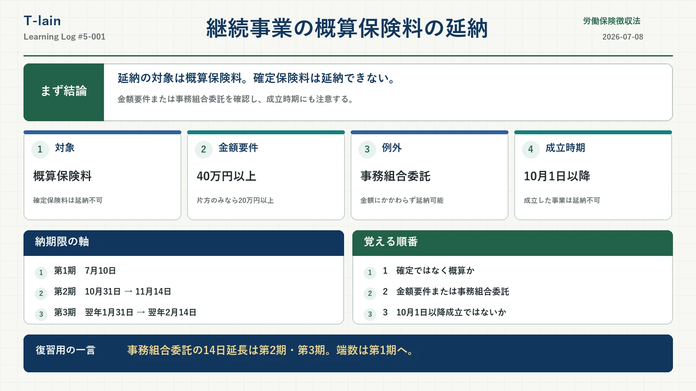

今日のテーマ
労働保険徴収法における、継続事業の概算保険料の延納。
まず押さえる結論
今日は、労働保険徴収法の「継続事業における概算保険料の延納」を勉強した。
最初に大事なのは、確定保険料は延納できないという点。延納の対象として押さえる中心は、これからの年度分を見込んで納める概算保険料の方になる。
「労働保険料なら何でも分割できる」と考えると危ない。ここが最初のひっかけポイントだと思う。
継続事業で延納できる条件
継続事業で概算保険料を延納できる主な条件は、次のどちらか。
- 概算保険料の額が40万円以上であること
- 労働保険事務の処理を労働保険事務組合に委託していること
通常は金額要件を見る。ただし、労働保険事務組合に委託している場合は、金額にかかわらず延納できる。
「40万円以上じゃないと延納できない」と覚えきってしまうと、事務組合委託のパターンで間違えそう。
労働保険事務組合に委託している場合
労働保険事務組合に委託している場合は、概算保険料の額にかかわらず延納できる。
これは単なる例外というより、事務処理を事務組合に委託しやすくする意味もあると理解すると覚えやすい。労働保険の手続きは事業主にとって負担が大きいので、その負担を軽くする仕組みとして事務組合制度がある。
ここで大事なのは、延納できる条件と納期限が延びる話を分けること。
- 事務組合に委託している → 金額にかかわらず延納できる
- さらに、第2期・第3期では納期限が14日延びる扱いがある
10月1日以降成立は延納できない
継続事業でも、10月1日以降に保険関係が成立した事業は延納できない。
たとえば概算保険料が40万円以上あっても、労働保険事務組合に委託していても、10月1日以降成立なら延納できない、という整理になる。
年度末までの期間が短く、分割する意味が薄いからだと理解しておくと入りやすい。ただし、条文・施行規則上の正確な整理はテキストで確認したい。
納期限の整理表
継続事業の概算保険料を延納すると、年度を大きく3つの期に分けて考える。
| 期 | 対象期間 | 通常の納期限 | 労働保険事務組合に委託している場合 |
|---|---|---|---|
| 第1期 | 4月・5月・6月・7月 | 7月10日 | 原則7月10日。年度途中成立の最初の期は「成立日の翌日から50日以内」で整理 |
| 第2期 | 8月・9月・10月・11月 | 10月31日 | 11月14日 |
| 第3期 | 12月・1月・2月・3月 | 翌年1月31日 | 翌年2月14日 |
ここで混乱しやすいのは第1期。第2期・第3期は、事務組合に委託していると14日延びるので、10月31日が11月14日、1月31日が2月14日になる。
でも、第1期を単純に7月24日と考えない。年度途中に成立した事業では、最初の期分について「保険関係成立の日の翌日から50日以内」という整理が出てくる。ここは14日延長とは別の話として分けておきたい。
端数は第1期にまとめる
延納すると、概算保険料を期ごとに分けて納付する。このとき割り切れない端数が出ることがある。
その端数は、第1期にまとめる。
地味だけど、試験で聞かれると迷いそう。自分用には「端数は最初に寄せる。第1期。」と覚えておきたい。
試験で間違えやすそうなポイント
- 確定保険料は延納できない
- 延納の中心は概算保険料
- 継続事業の金額要件は原則40万円以上
- 片保険の場合は20万円以上という整理がある
- 労働保険事務組合に委託していれば、金額にかかわらず延納できる
- 10月1日以降に保険関係が成立した事業は延納できない
- 第1期を単純に14日延長しない
- 端数は第1期にまとめる
今日のまとめ
継続事業の概算保険料の延納は、まず対象を間違えないことが大事。確定保険料は延納できない。延納の中心は概算保険料。
そして、継続事業で延納できるのは、原則として概算保険料が40万円以上の場合。ただし、労働保険事務組合に委託している場合は、金額にかかわらず延納できる。
一方で、10月1日以降に保険関係が成立した事業は延納できない。ここはかなり試験で狙われそう。
復習用の一言まとめ
継続事業の延納は「概算保険料」が対象。40万円以上または事務組合委託で延納できるが、10月1日以降成立は延納できない。
復習メモ
- 概算保険料40万円以上という金額要件の条文・施行規則上の表現
- 労災保険または雇用保険の一方のみ成立している場合の20万円基準
- 労働保険事務組合委託時の納期限延長の具体的な扱い
- 第1期の納期限と、年度途中成立時の50日以内の整理
- 10月1日以降成立の事業が延納できない理由と条文上の位置づけ
- 端数を第1期にまとめる根拠条文
この記事は社労士試験の学習記録であり、実務上の判断は最新の法令・通達・公的情報で確認してください。